How to Play & Cards
This site lets you play 8 party games for free — together in person or over a voice call. No app install needed: just open it in the browser on iPhone, Android or PC.
Getting started
- One person enters a name and taps "Create a room" to get a 6-digit room code.
- Everyone else taps "Join a room" and enters the same code (Android app users switch to "Online" first).
- The room creator (host) picks a game and taps "Start".
On iPhone, tap Safari's Share button → "Add to Home Screen" to play full-screen like an app. For talking games, play while on a voice call (Discord, etc.) when you're apart.
8 games
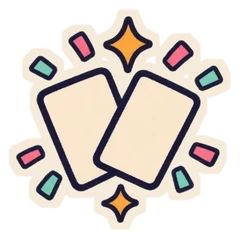
Chaos Arena (featured)（2–8 players）
On your turn, draw 1 card from the deck, play 1 card from your hand and do what it says. Put a pitfall in front of someone, make everyone play rock-paper-scissors at once, lose for saying "I"… anything can happen. Losers drop out; the last one standing — or whoever meets a card's win condition (15 coin points, it's your birth month, etc.) — wins. Sometimes everyone loses together. Star cards (★) are especially strong. One "Tonight's Rule" is added at the start. If you catch someone breaking a speech or gesture rule, tap "Foul!" on them.
Word Wolf（3+ players）
Everyone gets a word, but one player (two with 7+) gets a slightly different one — that's the "Wolf". Nobody knows which side they're on. Talk about your word and vote for who you think is the Wolf. If the Wolf gets the most votes, they can still win by guessing the Citizens' word. Words come in similar pairs, like "Pizza" and "Burger".
Forbidden Words（3+ players）
Everyone gets a different forbidden word, but you can't see your own. Chat away and try to make the others say theirs. When you catch someone, tap "Said it!". The last one standing wins. On "Hard", the forbidden words are verbal tics like "really" or "like".
Who's the Spy?（3+ players）
Everyone gets the same "location" except the Spy, who doesn't know it. Take turns asking questions to find the Spy. If the Spy gets the most votes, they can still win by picking the location from 12 options.
Mind Sync（2+ players）
Everyone answers prompts like "Name a red food" on their own screen. The more people with the same answer, the more points. Differences in letter case and full-/half-width characters count as the same answer.
20 Questions（2+ players）
Only the quizmaster knows the answer. Everyone else asks yes/no questions and tries to guess it in time. The guesser and the quizmaster each get 1 point.
Who's Most Likely?（3+ players）
Everyone anonymously votes on "Who here is most likely to…?" and the results are revealed. Nobody can see who voted for whom.
Draw & Pass（3–8 players）
First, everyone writes a prompt (like "A cat flying through the sky"). It's passed to the next person, who draws it. The next person sees only the drawing and writes what they think it is, then the next draws that sentence… and so on for everyone. At the end, reveal frame by frame how the prompt changed — and laugh!
Chaos Arena cards
50 cards in total (14 of them ★ star cards). Some cards with the same name only reveal their effect after they're played ("Everyone RPS" has 4 versions with different losing throws, and "Fingers Out" has 4 versions).
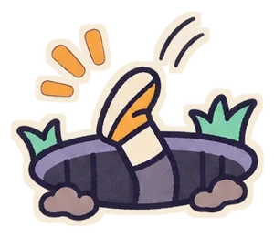
PitfallPlace it in front of a player you choose. If it's still there at the end of their turn, they fall in and lose.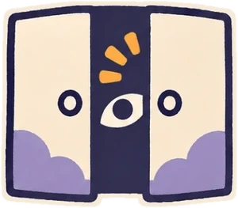
Closing BellWhen your next turn ends, everyone still in the game loses.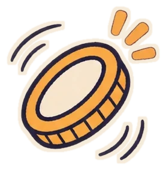
Gold CoinPlace it in front of yourself. Worth 5 points. Collect 15+ points to win.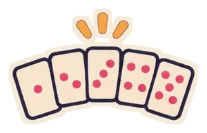
Fingers OutOn "3, 2, 1", everyone shows 1–5 fingers. Anyone who shows an odd number loses.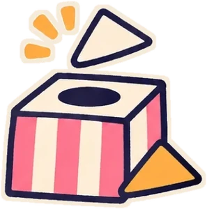
PresentAsk everyone else: "A present — want it or not?"… Anyone who chooses "No thanks" loses.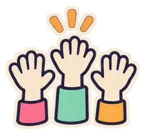
Majority VoteEveryone votes. Whoever gets the most votes loses (if tied, nobody loses).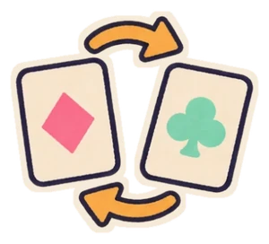
Hand SwapSwap your whole hand with a player you choose.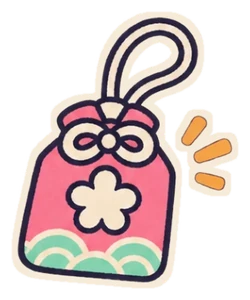
CharmKeep it in your hand. The first time you would lose, it takes the hit instead (automatic). Playing it does nothing.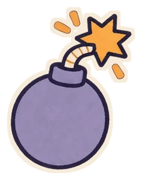
★ BombPlace it in front of yourself. When there are 4 bombs on the table, everyone loses together.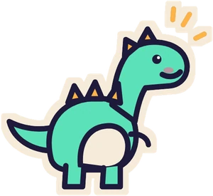
★ DinosaurPlace it in front of yourself. The dinosaur is so big that nobody can place cards in front of you anymore.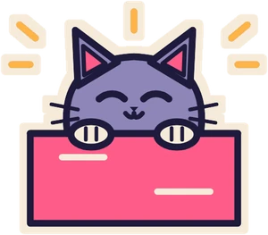
★ Cat InterruptKeep it in your hand and shout "Interrupt!" right after someone plays a card to cancel its effect (then draw 1). Play it on your turn to draw 2.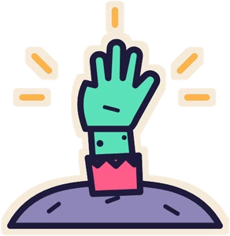
★ Zombie AlertStays as a rule. When your turn comes, shout "Zombies!" Anyone who doesn't shout loses.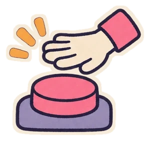
★ Nose TouchWhen you give the signal, everyone presses right away. Anyone who doesn't press within 3 seconds loses.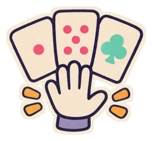
★ No RefillsStays as a rule. Nobody can draw from the deck anymore. Anyone with no cards at the start of their turn loses.Tonight's Rules
At the start of the Arena, one of these is added at random (you can turn it off in the lobby).
- Night of Chain Reactions: When someone loses, the person in the next seat loses too.
- Night of "Yum!": On your turn, name a food and say "Yum!" Everyone else must reply "So good!" right away. Anyone who fails loses (report the foul).
- Night of Taboo Words: Anyone who says a word containing "win" or "lose" loses (report the foul).
- Night of the Nameless: Don't say card names out loud. Anyone who does loses (report the foul).
- Night of Speed: Turns are 20 seconds. When time runs out, a card is played from your hand automatically.
- Night of Luxury: Everyone starts with 3 cards.